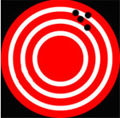

Data
Uncertainty, Error, and Confidence
Did you know?
Did you know that when scientists use the word "uncertainty," it does not mean that they are unsure about their research results? Likewise, when scientists talk about "error," they do not mean that the research is flawed. Scientists actually measure error and report it along with their findings.
The Olympic sport of biathlon (Figure 1) is a cross-country ski race of 20 km in which the athletes stop on four occasions to shoot 0.57 cm diameter bullets from a .22 caliber rifle at targets. The sport requires not only great endurance, but exceptional accuracy as the athletes shoot on two occasions from the prone position (lying down) and on two occasions while standing. The targets the athletes aim for are all 50 m away, but the size varies to match the precision expected of them; those targeted while shooting in the prone position are 4.5 cm in diameter while those targeted from the more difficult standing position are 11.5 cm in diameter. In both cases, however, the diameter of the target is many times larger than the diameter of the bullet itself – why?
While the legend of Robin Hood splitting one arrow with another is well-known, it is also unrealistic. Biathlon targets are purposely sized many times larger than the bullets the athletes shoot to account for the inherent error and uncertainty involved in long distance riflery. Even the most skilled marksman cannot account for every variable affecting the path of the bullet, like sudden gusts of wind or variations in air pressure. Shooting from the standing position involves even greater uncertainty, as indicated by the larger targets used, because even the simple rise and fall of an athlete's chest as they breathe can affect the aim of their rifle.
Categorizing uncertainty: Accuracy vs. precision
Scientific measurements also incorporate variability, and scientists report this as uncertainty in an effort to share with others the level of error that they found acceptable in their measurements. But uncertainty in science does not imply doubt as it does in everyday use. Scientific uncertainty is a quantitative measurement of variability in the data. In other words, uncertainty in science refers to the idea that all data have a range of expected values as opposed to a precise point value. This uncertainty can be categorized in two ways: accuracy and precision.
- Accuracy is a term that describes how well a measurement approximates the theoretically correct value of that measurement, for example, how close the arrow is to the bullseye (Figure 2).
- The term precision, by comparison, describes the degree to which individual measurements vary around a central value. Measurements with high precision are highly reproducible because repeated measurement will reliably give a similar result; however, they may or may not be accurate (Figure 2).
Uncertainty in nature
Karl Pearson, the English statistician and geneticist, is commonly credited with first describing the concept of uncertainty as a measure of data variability in the late 1800s (Salsburg, 2001). Before Pearson, scientists realized that their measurements incorporated variability, but they assumed that this variability was simply due to error. For example, measurement of the orbits of planets around the sun taken by different scientists at different times varied, and this variability was thought to be due to errors caused by inadequate instrumentation. The French mathematician Pierre-Simon Laplace discussed a method for quantifying error distributions of astronomical measurements caused by small errors associated with instrument shortcomings as early as 1820. As technology improved through the 1800s, astronomers realized that they could reduce, but not eliminate this error in their measurements.
Pearson put forward a revolutionary idea: Uncertainty, he proposed, was not simply due to the limits of technology in measuring certain events – it was inherent in nature. Even the most careful and rigorous scientific investigation (or any type of investigation for that matter) could not yield an exact measurement. Rather, repeating an investigation would yield a scatter of measurements that are distributed around some central value. This scatter would be caused not only by error, but also by natural variability. In other words, measurements themselves, independent of any human or instrument inaccuracies, exhibit scatter.
Whether it is the flight path of an arrow, the resting heart rate of an adult male, or the age of a historical artifact, measurements do not have exact values, but instead always exhibit a range of values, and that range can be quantified as uncertainty. This uncertainty can be expressed as a plot of the probability of obtaining a certain value, and the probabilities are distributed about some central, or mean, value.
Comprehension Checkpoint
Certain large scale scientific measurements, such as the orbit of planets, have no uncertainty associated with them.
Uncertainty and error in practice: Carbon-14 dating
Archaeologists, paleontologists, and other researchers have long been interested in dating objects and artifacts in an effort to understand their history and use. Unfortunately, written records are a relatively recent human invention, and few historical artifacts are accompanied by precise written histories.
In the first half of the 20th century, an American nuclear chemist by the name of Willard F. Libby became interested in using the radioactive isotope 14C to date certain objects. The theory of radiocarbon dating is relatively simple. Most carbon in the Earth's atmosphere is in the form of 12C, but a small amount of the isotope 14C is produced naturally through the bombardment of 14N with cosmic rays (W. F. Libby, 1946). As plants take up carbon from the atmosphere through respiration, they incorporate both 14C as well as the more abundant 12C into their tissues. Animals also take up both carbon isotopes through the foods that they eat. Thus, all living organisms have the same ratio of 14C and 12C isotopes in their body as the atmosphere.
Unlike 12C, 14C is a radioactive isotope that is constantly undergoing decay to its daughter product 14N at a known rate. While an organism is alive, it is taking up new 14C from the environment and thus remains in equilibrium with it. When that organism dies, however, the carbon in its tissues is no longer replaced, and the amount of 14C slowly decreases in time as it decays to 14N. Thus, the amount of radioactive 14C remaining in a piece of wood or an animal bone can be used to determine when that organism died. In essence, the longer the organism has been dead, the lower the 14C levels.
The amount of radioactive material (such as 14C) in a sample can be quantified by counting the number of decays that the material undergoes in a specific amount of time, usually reported in counts per minute (cpm). When Libby began his radiocarbon work in the 1940s, the technology available was still quite new. A simple Geiger counter was only first invented in 1908 by the German scientist Hans Wilhelm Geiger, a student of Ernest Rutherford's, and it was not perfected until 1928 when Walther Müller, a student of Geiger's, improved on the design, allowing it to detect all types of radiation. Libby himself is credited with building the first Geiger counter in the United States in the 1930s.
Libby, however, faced a major hurdle with using the instrument to measure 14C. The problem was that naturally-occurring background radiation from cosmic rays and Earth, along with the variability associated with that background signal, would overwhelm the small 14C signal he expected to see. In 1949, he reported on a method for reducing the background signal and variability: He placed the entire sample and the detector inside of a tube shielded by 2 inches of lead and 4 inches of iron (W. F. Libby, Anderson, & Arnold, 1949). In this way, Libby and his colleagues reduced the background signal from 150 cpm to 10 cpm and minimized the variability associated with the signal to "about 5-10% error," or less than 1 cpm.
Libby and colleagues do not use the word error as we do in common language, where it refers to a mistake such as a typographical error or a baseball error. The Latin origin of the word error (errorem) means wandering or straying, and the scientific use of the word is closer to this original meaning. In science, error is the difference between the true value and the measured value, and that difference can have many different causes. Libby calculated the error associated with his measurements by counting the number of decay events in the sample in a known amount of time, repeating the measurement over multiple periods, and then using statistical techniques to quantify the error (see our Statistics in Science module).
In 1949, Libby, working with his post-doctoral student James Arnold, reported the first use of radiocarbon dating for determining the age of wood fragments from archaeological sites around the world (Arnold & Libby, 1949). Because the method was new, Arnold and Libby were careful to replicate their measurements to provide a detailed estimate of different types of error, and they compared the results of their method with samples of a known age as a control (Table 1).
| Sample | Specific activity (cpm/g of carbon) | Age (years) | |
|---|---|---|---|
| Found | Found | Expected | |
| Tree Ring | 11.10 ± 0.31 | 1100 ± 150 | 1372 ± 50 |
| 11.52 ± 0.35 | |||
| 11.34 ± 0.25 | |||
| 10.15 ± 0.44 | |||
| 11.08 ± 0.31 | |||
| Average: 10.99 ± 0.15 | |||
| Table 1: Age determinations on samples of known age from Arnold & Libby (1949). The specific activities for five different replicates of a sample of wood from a Douglas fir excavated from the Red Rock Valley are shown in the second column of Table 1. Each individual measurement has an error shown to the right of it, indicated by the ± sign. Arnold and Libby describe these measurements in their paper, stating, "The errors quoted for the specific activity measurements are standard deviations as computed from the Poisson statistics of counting random events." In other words, the individual error is calculated from the expected uncertainties associated with radioactive decay for each sample. | |||
The specific activities for five different replicates of a sample of wood from a Douglas fir excavated from the Red Rock Valley are shown in the second column of Table 1. Each individual measurement has an error shown to the right of it, indicated by the ± sign. Arnold and Libby describe these measurements in their paper, stating, "The errors quoted for the specific activity measurements are standard deviations as computed from the Poisson statistics of counting random events." In other words, the individual error is calculated from the expected uncertainties associated with radioactive decay for each sample.
Statistical vs. systematic error
As seen in Table 1, an average specific activity value (10.99) is provided at the bottom with an overall error. The overall error (0.15) is smaller than the individual error reported with each measurement. This is an important feature of the statistical calculation of error associated with scientific data – as you increase the number of measurements of a value, you decrease the uncertainty and increase the confidence associated with the approximation of the value. The error reported alongside of the specific activity provides a measure of the precision of the value, and is commonly referred to as statistical error. Statistical error is what Pearson described as the inherent uncertainty of a measurement. It is caused by random fluctuations within a system, such as the random fluctuation of radioactive decay, and is sometimes referred to as random error as the researcher has little control over it. Statistical error cannot be eliminated, as Pearson described, but it can be measured and reduced by conducting repeated observations of a specific event.
In column 3 of Table 1, Arnold and Libby estimate the age of the Douglas fir sample based on the 14C activity as 1100 years old (placing its first season of growth in the year 849 CE). In column 4 of Table 1, they report the actual age of the Douglas fir as calculated by counting tree rings in the sample as 1372 years old (placing its first season in the year 577 CE). By comparing the 14C age to a theoretically correct value as determined by the tree ring count, Arnold and Libby allow the reader to gauge the accuracy of their method, and this provides a measure of a second type of error encountered in science: systematic error. Statistical error cannot be eliminated, but it can be measured and reduced by conducting repeated observations of a specific event. Systematic error, in contrast, can be corrected for – like if you know your oven is 50° too hot, you set it for 300° rather than 350°.
Based on their data, Arnold and Libby state that the "agreement between prediction and observation is seen to be satisfactory." However, as he continued to do research to establish the method of 14C dating, Libby began to recognize that the discrepancy between radiocarbon dating and other methods was even larger for older objects, especially those greater than 4,000 years old (W.F. Libby, 1963). Where theoretically correct dates on very old objects could be established by other means, such as in samples from the temples of Egypt, where a calendar system was well-established, the ages obtained through the radiocarbon dating method (the "found" ages in Table 1) were consistently older than the "expected" dates, often by as much as 500 years.
Libby knew that there was bound to be statistical error in these measurements and had anticipated using 14C dating to calculate a range of dates for objects. But the problem he encountered was different: 14C-dating systematically calculated ages that differed by as much as 500 years from the actual ages of older objects. Systematic error, like Libby encountered, is due to an unknown but non-random fluctuation, like instrumental bias or a faulty assumption. The radiocarbon dating method had achieved good precision, replicate analyses gave dates within 150 years of one another as seen in Table 1; but initially it showed poor accuracy – the "found" 14C age of the Douglas fir was almost 300 years different than the "expected" age, and other objects were off by some 500 years.
Unlike statistical error, systematic error can be compensated for, or sometimes even eliminated if its source can be identified. In the case of 14C-dating, it was later discovered that the reason for the systematic error was a faulty assumption: Libby and many other scientists had assumed that the production rate for 14C in the atmosphere was constant over time, but it is not. Instead, it fluctuates with changes in Earth's magnetic field, the uptake of carbon by plants, and other factors. In addition, levels of radioactive 14C increased through the 20th century because nuclear weapons testing released high levels of radiation to the atmosphere.
In the decades since Libby first published his method, researchers have recalibrated the radiocarbon dating method with tree-ring dates from bristlecone pine trees (Damon et al., 1974) and corals (Fairbanks et al., 2005) to correct for the fluctuations in the production of 14C in the atmosphere. As a result, both the precision and accuracy of radiocarbon dates have increased dramatically. For example, in 2000, Xiaohong Wu and colleagues at Peking University in Beijing used radiocarbon dating on bones of the Marquises (lords) of Jin recovered from a cemetery in Shanxi Province in China (see Table 2) (Wu et al., 2000). As seen in Table 2, not only is the precision of the estimates (ranging from 18 to 44 years) much tighter than Libby's reported 150 year error range for the Douglas fir samples, but the radiocarbon dates are highly accurate, with the reported deaths dates of the Jin (the theoretically correct values) falling within the statistical error ranges reported in all three cases.
| Name of Jin Marquis | Radiocarbon Date (BCE) | Documented Death Date (BCE) |
|---|---|---|
| Jing | 860-816 | 841 |
| Li | 834-804 | 823 |
| Xian | 814-796 | 812 |
Comprehension Checkpoint
Which kind of error is not random and can be compensated for?
Confidence: Reporting uncertainty and error
As a result of error, scientific measurements are not reported as single values, but rather as ranges or averages with error bars in a graph or ± sign in a table. Karl Pearson first described mathematical methods for determining the probability distributions of scientific measurements, and these methods form the basis of statistical applications in scientific research (see our Data: Statistics module). Statistical techniques allow us to estimate and report the error surrounding a value after repeated measurement of that value. For example, both Libby and Wu reported their estimates as ranges of one standard deviation around the mean, or average, measurement. The standard deviation provides a measure of the range of variability of individual measurements, and specifically, defines a range that encompasses 34.1% of individual measurements above the mean value and 34.1% of those below the mean. The standard deviation of a range of measurements can be used to compute a confidence interval around the value.
Confidence statements do not, as some people believe, provide a measure of how "correct" a measurement is. Instead, a confidence statement describes the probability that a measurement range will overlap the mean value of a measurement when a study is repeated. This may sound a bit confusing, but consider a study by Yoshikata Morimoto and colleagues, who examined the average pitch speed of eight college baseball players (Morimoto et al., 2003). Each of the pitchers was required to throw six pitches, and the average pitch speed was found to be 34.6 m/s (77.4 mph) with a 95% confidence interval of 34.6 ± 0.2 m/s (34.4 m/s to 34.8 m/s). When he later repeated this study requiring that each of the eight pitchers throw 18 pitches, the average speed was found to be 34.7 m/s, exactly within the confidence interval obtained during the first study.
In this case, there is no "theoretically correct" value, but the confidence interval provides an estimate of the probability that a similar result will be found if the study is repeated. Given that Morimoto determined a 95% confidence interval, if he repeated his study 100 times (without exhausting his baseball pitchers), his confidence interval would overlap the mean pitch speed 95 times, and the other five studies would likely yield pitch speeds that fall outside of his confidence interval.
In science, an important indication of confidence within a measurement is the number of significant figures reported. Morimoto reported his measurement to one decimal place (34.6 m/s) because his instrumentation supported this level of precision. He was able to distinguish differences in pitches that were 34.6 m/s and 34.7 m/s. Had he just rounded his measurements to 35 m/s, he would have lost a significant amount of detail contained within his data. Further, his instrumentation did not support the precision needed to report additional significant figures (for example, 34.62 m/s). Incorrectly reporting significant figures can introduce substantial error into a data set.
Comprehension Checkpoint
Scientific measurements are reported as ranges or with the +/- sign rather than as single values because
(A)__every measurement has some degree of error.
(B)__some scientists are not sure that their calculations are correct.
Error propagation
As Pearson recognized, uncertainty is inherent in scientific research, and for that reason it is critically important for scientists to recognize and account for the errors within a dataset. Disregarding the source of an error can result in the propagation and magnification of that error. For example, in 1960 the American mathematician and meteorologist Edward Norton Lorenz was working on a mathematical model for predicting the weather (see our Modeling in Scientific Research module) (Gleick, 1987; Lorenz, 1993). Lorenz was using a Royal McBee computer to iteratively solve 12 equations that expressed relationships such as that between atmospheric pressure and wind speed. Lorenz would input starting values for several variables into his computer, such as temperature, wind speed, and barometric pressure on a given day at a series of locations. The model would then calculate weather changes over a defined period of time. The model recalculated a single day's worth of weather changes in single minute increments and printed out the new parameters.
On one occasion, Lorenz decided to rerun a particular model scenario. Instead of starting from the beginning, which would have taken many hours, he decided to pick up in the middle of the run, consulting the printout of parameters and re-entering these into his computer. He then left his computer for the hour it would take to recalculate the model, expecting to return and find a weather pattern similar to the one predicted previously.
Unexpectedly, Lorenz found that the resulting weather prediction was completely different from the original pattern he observed. What Lorenz did not realize at the time was that while his computer stored the numerical values of the model parameters to six significant figures (for example 0.639172), his printout, and thus the numbers he inputted when restarting the model, were rounded to three significant figures (0.639). The difference between the two numbers is minute, representing a margin of systematic error less than 0.1% – less than one thousandth of the value of each parameter. However, with each iteration of his model (and there were thousands of iterations), this error was compounded, multiplying many times over so that his end result was completely different from the first run of the model. As can be seen in Figure 4, the error appears to remain small, but after a few hundred iterations it grows exponentially until reaching a magnitude equivalent to the value of the measurement itself (~0.6).
Lorenz published his observations in the now classic work Deterministic Nonperiodic Flow (Lorenz, 1963). His observations led him to conclude that accurate weather prediction over a period of more than a few weeks was extremely difficult – perhaps impossible – because even infinitesimally small errors in the measurement of natural conditions were compounded and quickly reached levels equal to the measurements themselves.
The work motivated other researchers to begin looking at other dynamic systems that are similarly sensitive to initial starting conditions, such as the flow of water in a stream or the dynamics of population change. In 1975, the American mathematician and physicist James Yorke and his collaborator, the Chinese-born mathematician Tien-Yien Li, coined the term chaos to describe these systems (Li & Yorke, 1975). Again, unlike the common use of the term chaos, which implies randomness or a state of disarray, the science of chaos is not about randomness. Rather, as Lorenz was the first to do, chaos researchers work to understand underlying patterns of behavior in complex systems toward understanding and quantifying this uncertainty.
Comprehension Checkpoint
Scientists should look for the source of error within a dataset.
Recoganizing and reducing error
Error propagation is not limited to mathematical modeling. It is always a concern in scientific research, especially in studies that proceed stepwise in multiple increments because error in one step can easily be compounded in the next step. As a result, scientists have developed a number of techniques to help quantify error. Here are two examples:
Controls: The use of controls in scientific experiments (see our Experimentation in Scientific Research module) helps quantify statistical error within an experiment and identify systematic error in order to either measure or eliminate it.
Blind trials: In research that involves human judgment, such as studies that try to quantify the perception of pain relief following administration of a pain-relieving drug, scientists often work to minimize error by using "blinds." In blind trials, the treatment (i.e. the drug) will be compared to a control (i.e. another drug or a placebo); neither the patient nor the researcher will know if the patient is receiving the treatment or the control. In this way, systematic error due to preconceptions about the utility of a treatment is avoided.
Error reduction and measurement efforts in scientific research are sometimes referred to as quality assurance and quality control. Quality assurance generally refers to the plans that a researcher has for minimizing and measuring error in his or her research; quality control refers to the actual procedures implemented in the research. The terms are most commonly used interchangeably and in unison, as in "quality assurance/quality control" (QA/QC). QA/QC includes steps such as calibrating instruments or measurements against known standards, reporting all instrument detection limits, implementing standardized procedures to minimize human error, thoroughly documenting research methods, replicating measurements to determine precision, and a host of other techniques, often specific to the type of research being conducted, and reported in the Materials and Methods section of a scientific paper (see our Understanding Scientific Journals and Articles module).
Reduction of statistical error is often as simple as repeating a research measurement or observation many times to reduce the uncertainty in the range of values obtained. Systematic error can be more difficult to pin down, creeping up in research due to instrumental bias, human mistakes, poor research design, or incorrect assumptions about the behavior of variables in a system. From this standpoint, identifying and quantifying the source of systematic error in research can help scientists better understand the behavior of the system itself.
Uncertainty as a state of nature
While Karl Pearson proposed that individual measurements could not yield exact values, he felt that careful and repeated scientific investigation coupled with statistical analysis could allow one to determine the true value of a measurement. A younger contemporary of Pearson's, the English statistician Ronald Aylmer Fisher, extended and, at the same time, contradicted this concept. Fisher felt that because all measurements contained inherent error, one could never identify the exact or "correct" value of a measurement. According to Fisher, the true distribution of a measurement is unattainable; statistical techniques therefore do not estimate the "true" value of a measurement, but rather they are used to minimize error and develop range estimates that approximate the theoretically correct value of the measurement. A natural consequence of his idea is that occasionally the approximation may be incorrect.
In the first half of the 20th century, the concept of uncertainty reached new heights with the discovery of quantum mechanics. In the quantum world, uncertainty is not an inconvenience; it is a state of being. For example, the decay of a radioactive element is inherently an uncertain event. We can predict the probability of the decay profile of a mass of radioactive atoms, but we can never predict the exact time that an individual radioactive atom will undergo decay. Or consider the Heisenberg Uncertainty Principle in quantum physics, which states that measuring the position of a particle makes the momentum of the particle inherently uncertain, and, conversely, measuring the particle's momentum makes its position inherently uncertain.
Once we understand the concept of uncertainty as it applies to science, we can begin to see that the purpose of scientific data analysis is to identify and quantify error and variability toward uncovering the relationships, patterns, and behaviors that occur in nature. Scientific knowledge itself continues to evolve as new data and new studies help us understand and quantify uncertainty in the natural world.
Summary
There is uncertainty in all scientific data, and even the best scientists find some degree of error in their measurements. This module uses familiar topics - playing baseball, shooting targets, and calculating the age of an object - to show how scientists identify and measure error and uncertainty, which are reported in terms of confidence.
Key Concepts
- Uncertainty is the quantitative estimation of error present in data; all measurements contain some uncertainty generated through systematic error and/or random error.
- Acknowledging the uncertainty of data is an important component of reporting the results of scientific investigation.
- Uncertainty is commonly misunderstood to mean that scientists are not certain of their results, but the term specifies the degreee to which scientists are confident in their data.
- Careful methodology can reduce uncertainty by correcting for systematic error and minimizing random error. However, uncertainty can never be reduced to zero.
QUIZ
- When scientists report uncertainty in their data, they are
- The picture below provide an example of 
- Karl Pearson proposed that uncertainty in scientific measurements
- The difference between statistical error and systematical error is best described by which of the following?
- Increasing the number of measurements of a value generally increase the confidence one has in that value.
- When scientists report their error in their data, they are
- When a confidence interval is reported with a measurement, what does it indicate?
- The efforts scientists make toward minimizing measuring error in their research are generally referred to as
(A)__expressing concern over whether their data are correct.
(B)__stating that they do not know what their research means.
(C)__quantifying the degree of error and variability present in the data.
(D)__suggesting that others should not trust their conclusions.
(A)__high accuracy, high precision.
(B)__high accuracy, low precision.
(C)__low accuracy, high precision
(D)__Low accuracy, low precision
(A)__is primarily due to instrument error.
(B)__is avoidable in most circumstances.
(C)__is the cause of poor science.
(C)__Statistical error can be eliminated, while systematic error cannot.
(D)__Statistical error is due to statistics, while systematic error is due to the system.
(A)__presenting the probability that their research will turn out to be wrong.
(B)__admitting that their research is wrong.
(C)__detailing the mistakes they have made.
(D)__quantifying the variability associated with their measurements.
(A)__the probability that a similar result will be found if a study is repeated
(B)__the probability that the research has found the exact value of an individual measurement
(C)__the reasons that the researchers should be confident in their data.
(D)__the level to which a reader can be confident in the author's conclusions
(B)__error propagation/minimization.